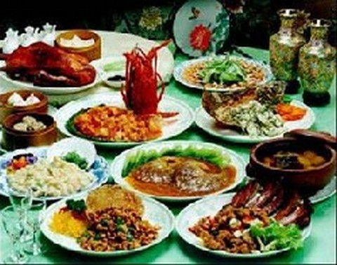

Шотландская кухня образовалась в итоге противоречивого и продолжительного развития. На шотландскую кухню повлияло множество зарубежных кухонь. Несмотря на отсутствие чисто национального шотландского начала, шотландской еде присущи черты явного своеобразия.
Шотландские плодородные угодья, климат и старинные шотландские земледельческие традиции вместе с методами копчения и соления шотландских продуктов создали прекрасную почву – все здесь любят готовить лучшие блюда и самую известную шотландскую деликатесную еду во всем мире. Огромные пастбища создали условия для специалистов от кулинарии, вернее возможность приготовить лучшую шотландскую говядину, баранину и оленину. Холодные озера, прозрачные реки и моря, окружающие Шотландию, дают людям шотландского лосося, форель и моллюсков. Плодородная шотландская почва дарит зерновые культуры, прекрасные шотландские овощи, тот же картофель и сочные ягоды. Кстати, шотландская кухня, которая прославилась своими печеньем и хлебом, шотландскими джемами и мармеладом, копченостями и знаменитым шотландским виски, и проч., и основывается на этих ингредиентах.
Шотландские кулинарные традиции в Шотландии, как и в большинстве иных государств, начинались с приготовления на открытом огне. Они берут начало с сытной горячей еды, с мясных, шотландских овощных блюд и круп, которые тут любят готовить в большом чане с водой поэтапно. Надо сказать, что такие ранние шотландские способы готовки еды очень повлияли на всю шотландскую кулинарию. Кстати, множество таких блюд существуют в Шотландии и сегодня. Скажем, такая еда, как шотландская говядина в пиве или шотландская курица в горшке, самые разнообразные шотландские гуляши и шотландские похлебки.
Очень популярное некогда национальное блюдо в Шотландии - овсяная жидкая каша, которую всегда подавали к завтраку. Кулинары Шотландии сумели создать много способов готовить овсянку.
В Шотландии умеют приготовить массу супов – густых и наваристых, в основном мясных с картофелем и крупяных, с шотландской капустой. Лучшая еда здесь - рыбные супы. Самый известный шотландский суп - мясной бульон шотландский, это – еда, которую готовят с перловкой и овощами. Есть в шотландской кухне самые разнообразные шотландские национальные рецепты того же жаркого с картофелем, из шотландской репы, свежего горошка, а также кулинарные рецепты гуляшей.
В Шотландии любят приготовить самый популярный деликатес - "Хаггис". Это блюдо готовится из овечьей требухи, из ячменя и с разными шотландскими специями. Шотландский Хаггис подается на подогретом блюде с пюре из шотландской картошки и из репы, и с шотландским виски, уже налитыми в стопки.
Шотландские кулинары и эстеты предпочитают готовить и массу сладкой еды - пудингов и шотландских булочек с джемом, шотландских кексов, шотландских десертов.
Любимый напиток в Шотландии, как и у англичан, шотландский чай. Его любят готовить и пьют с шотландским джемом и с мармеладом, со сдобами, шотландскими кексами и с шотландским песочным печением.